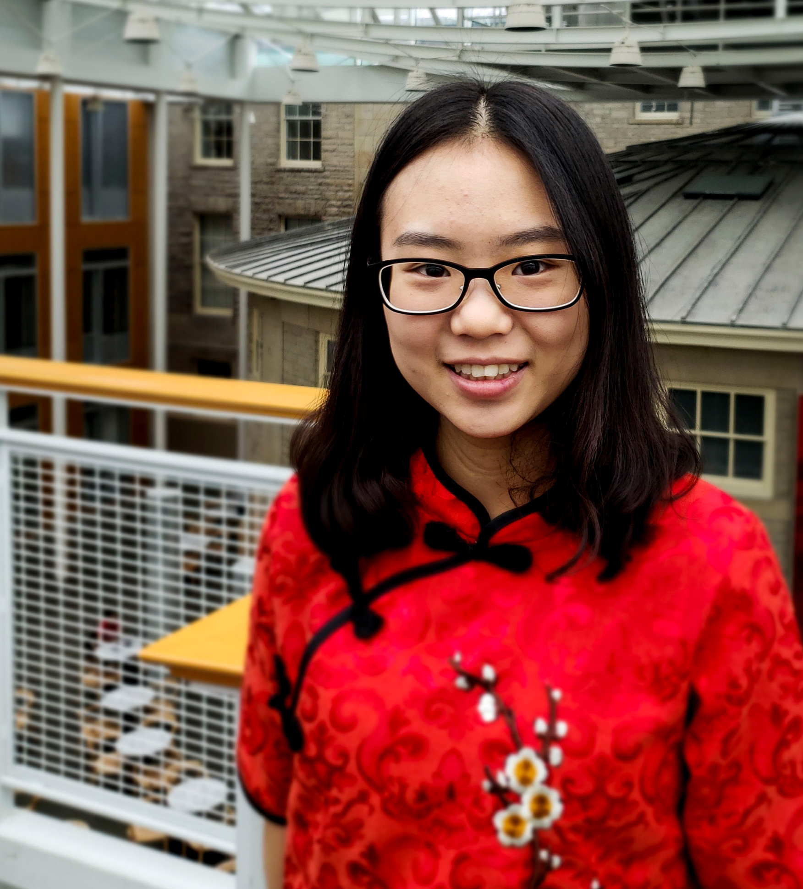
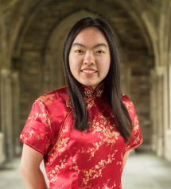
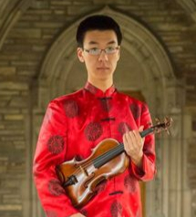
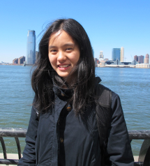
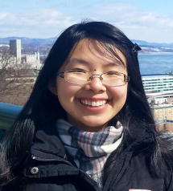
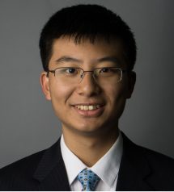
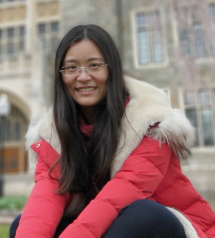
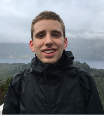

Class of 2018
-

Lingxi "Lindsey" Zhou
Instruments: Zhongruan, Guzheng
Bio: Lingxi is an an MPS student in Food Science. She received her undergraduate degree in the University of Hong Kong (HKU). There, she was the general manager of the Chinese Orchestra in HKU. Now, she plays the Zhongruan for CEME, though she is better at Guzheng because she has played it for more than 15 years.
Fun Fact: I like food! Food can cure everything. When I am in a bad mood, food can immediately comfort me. -

Selena Feng
Instruments: Guzheng
Bio: Selena is a freshman accounting major from Lishui, Zhejiang Province in China.
Fun Fact: This is actually my fourth year in CEME! -
Angel Li
Instruments: Guzheng, sometimes Percussion
Bio: In addition to CEME, Angel dances in the HanChum Korean Traditional Dance Group, showing her love for the traditional beauty of Eastern culture. Other things she is involved in on campus include the Phi Alpha Delta Pre-Law Fraternity, National Residence Hall Honorary, and Make-A-Wish at Cornell. In her free time, Angel loves to binge eat watermelon, shop for stationary, practice plate-spinning, and read a good book.
Fun Fact: I can barely swim, but shark cage diving is on my bucket list. -

Pei-Yi Lin
Instruments: Piano, Flute
Bio: Pei-Yi is an ECE major and CS minor, and uses music, reading, and cooking to procrastinate on problem sets. She arranged a few pieces in her time at CEME.
Fun Fact: My favorite food is Japanese chicken curry, although I will definitely try almost any food. I love going on food adventures and trying new things. The one exception is mint, because I don't like eating things that taste like my toothpaste! -

David Li
Instruments: Violin
Bio: David grew up in both Colorado and Arizona, and finished a bachelor's and MEng in computer science here at Cornell. In addition to playing for CEME, he also worked as an RA in the Low Rises for three years, and did research on teaching programming through video games.
Fun Fact: I still write with a fountain pen. -

Lining Zheng
Instruments: Clarinet
Bio: Lining (pronounced the same as ‘leaning’) is a chemistry major who is often in the midst of completing complicated chemistry problem sets or struggling to get experiments to work. Besides science, she also enjoys watching sports, cooking and participating in CEME events. She feels very lucky that she ran into the CEME booth in Club Fest during freshman year or else she would miss such a fantastic club.
Fun Fact: I've once taken 3 PE classes in one semester -

Xin Ting Liao
Instruments: Guzheng, Piano
Bio: Xin Ting Liao is a ChemE major and Business minor from Brooklyn, NY who was on the CEME eboard for 3.5 years.
Fun Fact: I ate rabbit with Harry on Easter. -

Yuhui Tang
Instruments: Cello
Bio: Yuhui is a physics major from Pelham, NY. As an undergrad I have conducted research on comets, and I will be pursuing a PhD in planetary science.
Fun Fact: I joined CEME due to meeting someone from a summer math camp at Cornell 2 years prior to enrolling here. -

Yanan Liu
Instruments: Yang Qin
Bio: Yanan is a Cornell Law School visiting researcher from China.
Class of 2017
-

Gregory Rosenthal
Instruments: Piano, Cello
Bio: Greg is pursuing a PhD in computer science at the University of Toronto, specifically doing computational complexity theory. He was the music director of CEME from 2015-2017. He enjoys composing, strategy games, squash, and Monty Python.
Fun Fact: My natural sleep cycle is longer than 24 hours, so during periods when I don't have to be awake at a certain time, I keep staying up later and later until I loop back around to normal-people hours.